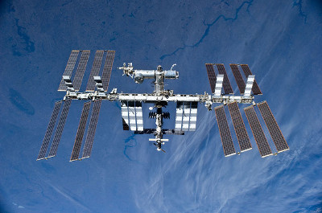

Accueil > Grands moments des vols spatiaux
Grands moments des vols spatiaux
La curiosité de l’Homme le pousse depuis toujours à se tourner vers l’espace. Voici donc un rapide historique de la conquête spatiale depuis son commencement.
1933 - 1959 : Premiers essais
17 août 1933 : les premières fusées à propulsion
liquides (oxygène et alcool), mises au point par les russes Youri Kondratiouk et Friedrich
Zander s’élèvent au-dessus des nuages.
1945 :
Les missiles fusées V2 allemands à longue portée sont lancés sur Londres.
Ils deviendront l’inspiration technologique de toutes les fusées qui suivront.
4 octobre 1957 : Le satellite Spoutnik
1, d’origine russe, devient le premier objet envoyé dans l’espace
par l’Homme.
3 novembre 1957 : La chienne russe
Laïka est le premier animal vivant à aller dans l’espace. Elle
meurt au bout de quelques heures à bord de Spoutnik 2.
1 octobre 1958 : Création de la NASA NASA 
National Aeronautics and Space Administration est l’agence gouvernementale qui s’occupe du programme spatial civil des États-Unis. ,
l’agence spatiale américaine.
4 janvier 1959 :
La sonde russe Luna 1 effectue le tout premier survol de la Lune
1960-1969 : Les premiers Hommes dans l’espace
12 avril 1961 : Premier Humain envoyé dans l’espace pour un vol
orbital : le russe Yuri Gagarin.
14 décembre
1962 : Premier survol d’une autre planète (Vénus) par la sonde
américaine Mariner 2.
14 février
1963 : Syncom-3, est le premier satellite en orbite géostationnaire
15 décembre 1964 : L’Italie lance son
premier satellite, San Marco 1, à l’aide d’un lanceur Scout américain ;
elle devient ainsi la première nation d’Europe de l’Ouest, à avoir mis un
satellite sur orbite.
18 mars 1965 : Première
sortie dans l’espace par le soviétique Alexei Leonov à bord de la capsule
Voskhod 2.
26 novembre 1965 : La
France lance son premier satellite, Astérix, à partir d’une fusée
Diamant.
3 février 1966 : La
sonde soviétique Luna 9 se pose en douceur sur la Lune.
21 juillet 1969 : Premiers pas de l’Homme
sur la Lune lors de la mission Apollo 11, effectués par Neil Armstrong et
Buzz Aldrin [1]. Leur fusée :
Saturn V est la plus grande du monde (110m de haut pour 3000t au décollage)
- Armstrong sur la lune - Apollo 11
- ©NASA AS11-40-5948 (domaine public)
1970 - 1999
19 avril 1971 : Lancement de la première station spatiale habitée,
Saliout-1 par l’Union soviétique.
13
novembre 1971 : Première mise en orbite autour d’une autre planète,
Mars, de la sonde Mariner-9.
31 mai 1975 :
Création de l’ESA, l’agence spatiale européenne.
20 juillet 1976 : La sonde américaine
Viking-1 réussit le premier atterrissage opérationnel sur Mars.
24 décembre 1979 : La fusée L3S,
rebaptisée "Ariane", proposée par le CNES à l’ESA est lancée
avec succès pour la toute première fois.
12 avril
1981 : Premier décollage de la navette spatiale Columbia.
24 juin 1982 : Jean-Loup
Chrétien est le deuxième Européen (après l’Allemand
Sigmund Jähn, 1978) et premier Français dans l’espace.
20 février 1986 : Mise en orbite du premier élément de la
station orbitale russe Mir.
25 avril 1990 :
Lancement du télescope spatial Hubble.
20
novembre 1998 : Le premier module de la station spatiale internationale (ISS ISS La Station Spatiale Internationale est un projet international dont la construction a commencé à être réalisée en 1998 grâce à de nombreuses agences spatiales de différents pays dont la NASA, le CNES (France), le Roscosmos (Russie) , etc.

Placée sur une orbite basse (330-420km), elle est habitée en permanence par un équipage mixte et international d’astronautes et scientifiques de différentes spécialités.
Actuellement elle a une masse d’environ 400 tonnes et occupe la surface d’un terrain de football. )
est mis en place.
- 
- Station Spatiale Internationale
- ©NASA S131-E-011053 (domaine public)
2000 jusqu’à aujourd’hui
28 avril 2001 : Dennis Tito premier touriste de l’espace (à bord
de l’ISS).
21 juin 2004 : Premier vol suborbital
habité non gouvernemental dans le cadre de l’Ansari X Prize (concours) avec le
SpaceShipOne. Le concours est remporté le 4 octobre 2004 lors du second
vol.
16 décembre 2004 : La sonde américaine
Voyager 1, lancée le 5 septembre 1977, passe au-delà de l’héliosphère
(à une vitesse de 17km/s). C’est le premier objet humain à sortir du système
solaire.
14 janvier 2005 : La sonde européenne
Huygens se pose sur Titan.
26 juillet 2005 :
Premier lancement d’une navette (Discovery) après l’accident de Columbia.
12 août 2005 : Lancement de Mars
Orbiter par la première fusée Atlas V.
19
janvier 2006 : Lancement de New Horizons vers Pluton. [2]
8
juillet 2011 : Dernier décollage de la navette spatiale
Atlantis, ce qui met fin au programme des navettes spatiales
américaines. [3]
12 novembre 2014 : La sonde
Rosetta (partie en 2004) lâche Philae à proximité
d’une comète (Churyumov-Gerasimenko) après avoir parcouru 6.5 milliards de kilomètres [4].
[1] Même si Neil Armstrong est le plus cité, c’est Buzz Aldrin qui fut le commandant de la mission Apollo 11
[2] ETIENNE, Jean. Nasa : 50 ans de conquête spatiale. Futura-Sciences [en ligne]. Juillet 2008, consulté en Janvier 2015. Consultable sur <http://www.futura-sciences.com/maga...>
[3] Petite histoire de la conquête spatiale Planète-Science [en ligne]. Consultée en Janvier 2015. Consultable sur <http://www.planete-sciences.org/rho...>
[4] En direct : atterrissage de Philae. CNES [en ligne]. Novembre 2014, consulté en Janvier 2015. Consultable sur <http://www.cnes.fr/web/CNES-fr/1154...>